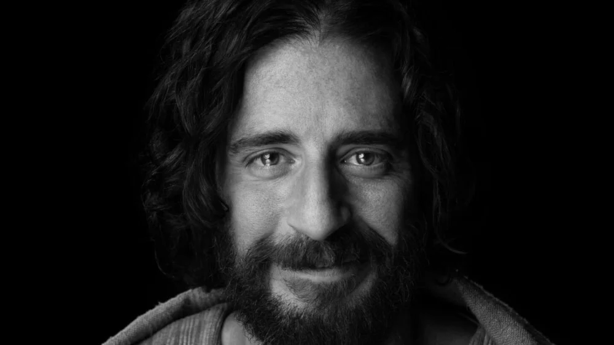

Foto retirada da série: The Chosen (personagem que retrata Jesus)
Somos livres do pecado por causa do amor de Jesus;
- Efésios 2:12 Estavámos separados de Deus por conta da entrada do pecado ao mundo.
- João 3:16 Porque Deus amou o mundo de tal maneira que entregou seu Filho Unigênito, para que todo aquele que nele crê, não pereça,
mas tenha a vida eterna.
- A morte de Jesus Foi a maior demonstração de amor que poderíamos ter recebido.
- Da mesma forma que por um homem entrou o pecado no mundo, por meio de Adão, por meio de um homem só, Jesus,
uma grande multidão de transgresssões foi perdoada.
Quem é esse que dizem ser o salvador do mundo?
- O cordeiro de Deus que tira o pecado do mundo
- A água da vida; somos seres completamente sedentos por Cristo
- Pão da vida - João (6:48)
- A luz do mundo; viver no pecado é viver em uma completa escuridão, lugar de medo, dúvidas e angústias. Mas Jesus veio para iluminar as nossas vidas.
E então toda incerteza e temor sãos transformados em convicção e confiança, quando Jesus que também nos faz ser luz no mundo
- A porta da vida
- O bom Pastor - Ele não é somente um bom Pastor pelo cuidado, proteção e conhecimento, mas por ser o único que dá sua vida por nós, e deixa as 99 ovelhas
para ir em busca de uma que se perdeu.
- A Ressurreição e a Vida - Jesus foi ferido por nossas transgresssões moído por nossas iniquidades, transpassado, humilhado, morto! Mas ao terceiro dia de
vida ressuscitou.
- O caminho, a verdade e a vida
- A videira verdadeira
- O grande EU SOU Enquanto nós existimos temporalmente, Deus é infinito, imutável, onisciente e onipresente.
"Aquele que faz de Jesus o seu tudo, achará tudo em Jesus"
- Charles Spurgeon